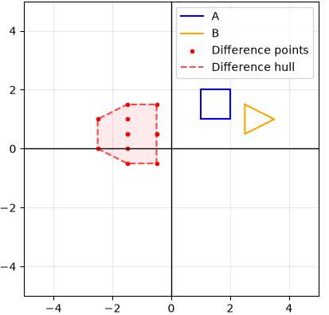
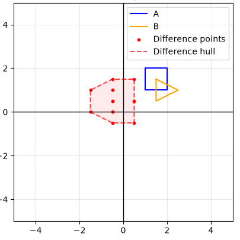
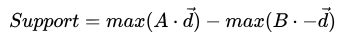

The Gilbert-Johnson-Keerthi (GJK) Algorithm is a popular algorithm used for collision detection between convex shapes in both 2D and 3D. The algorithm runs in very little time with a small amount of space, making it ideal for video games and physics simulations. Below is a description of the algorithm and an interactive visualization to see it running.
The GJK Algorithm is built on a concept called the "Minkowski Difference". This is calculated by finding the difference between each pair of points between two polygons, and finding the convex hull of the resulting points.

The Minkowski Difference of two polygons covers the origin if and only if the two polygons intersect. This is clear because if the two polygons overlap, then they share at least one point. The shared point is then subtracted from itself, result in the zero vector.

However, calculating this difference is far too complex, as it requires (a * b) number of calculations. Instead, we will rely on a support function, that will provide us with one point on the hull of the Minkowski Difference. Notably, points on the hull of the Minkowski difference are the ones with the highest magnitude, meaning they are a result of subracting two points on A and B that are very far away from each other. So, our support function will choose a direction, and subtract two points: The point on A furthest in that direction, and a point on B furthest in the opposite direction:

Now, we can find just one point on the Minkowski Difference, with only (a + b) calculations! Lastly, we need to use this function to build out a simplex of support points. Because we want to find out if the difference covers the origin, our search direction will always be toward the origin. We keep keep checking a new support point either to make a full simplex or replace a previous point on the simplex until we either contain the origin, or we never make it past the origin in some direction. Now, instead of checking the entire Minkowski Difference, we only need to check if our support simplex covers the origin.


In the example with the separate polygons, the algorithm could not find a point past the origin in the new direction, so it knew there was no collision after only three support point checks
Below is a general outline of the algorithm.
def GJK(a, b):
The update_simplex function will check if the current simplex covers the origin, and if not, finds the next direction to search in.
def update_simplex(simplex):